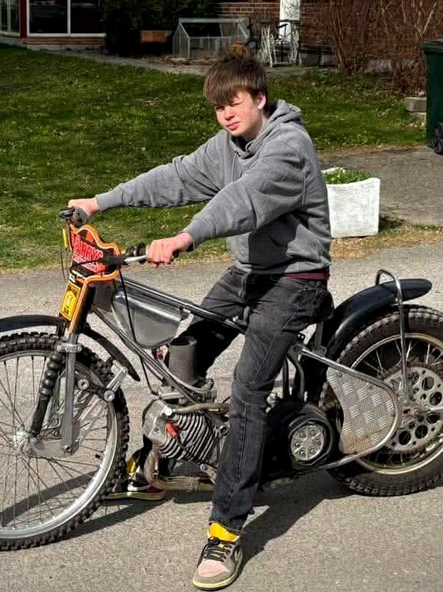

Prova På — hero-alternativ A, B, C och D (kombination)
Alternativ A — Affisch, inget foto
Bygger på er egen "Prova på speedway"-affisch: guld/vit text, penseldrag, gnistor. Funkar utan en enda bild — och ni behöver aldrig fråga vårdnadshavare om bildtillstånd för sidans viktigaste yta.
Barn & ungdom · från 6 år
Prova påspeedway
Kom till en vanlig träning, låna all utrustning och känn efter om det är din grej. Ingen erfarenhet krävs.
Alternativ B — Foto i fullbredd, utan toning
Samma upplägg som innan men ren bild med bara mörk toning åt vänster. Kräver ett högupplöst, rent foto (minst ~1600px brett) — det vi har nu är 562px och syns som mjukt när det sträcks.

Platshållarfoto
Barn & ungdom · helt gratis
Prova på speedway
Kom till en vanlig träning, låna all utrustning och känn efter om det är din grej. Ingen erfarenhet krävs.
Alternativ C — Foto i ram med klistermärke
Fotot visas som ett "föremål" i ungefär sin egen storlek, så låg upplösning spelar ingen roll. Lekfullt och barnvänligt, och det går att byta bild utan att något annat ändras.
Barn & ungdom · från 6 år
Prova på speedway
Kom till en vanlig träning, låna all utrustning och känn efter om det är din grej. Ingen erfarenhet krävs.
Alternativ D — A + C kombinerat
Affischrubriken med penseldrag från A, fotot i ram med klistermärke från C. Gnistor i bakgrunden. Bildplatsen är utbytbar när ni har ett riktigt foto.
Barn & ungdom · från 6 år
Prova påspeedway
Kom till en vanlig träning, låna all utrustning och känn efter om det är din grej. Ingen erfarenhet krävs.
Alternativ C om ni vill ha foto, alternativ A om ni vill ha en trygg lösning. C gör det lätt att byta bild i WordPress (en Utvald bild) och tål olika bildformat. A kräver inga bilder alls och passar er egen affisch — men har mindre "människor"-känsla.
Oavsett val: bilder på identifierbara barn kräver vårdnadshavares medgivande innan de läggs på en publik sida — värt att ha en enkel rutin för, särskilt eftersom Prova På-sidan är riktad just till föräldrar.